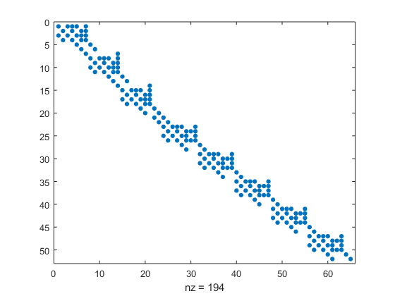
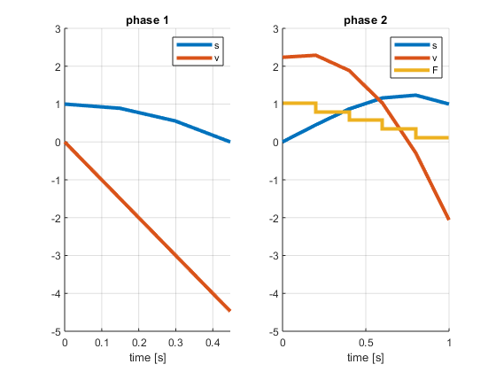
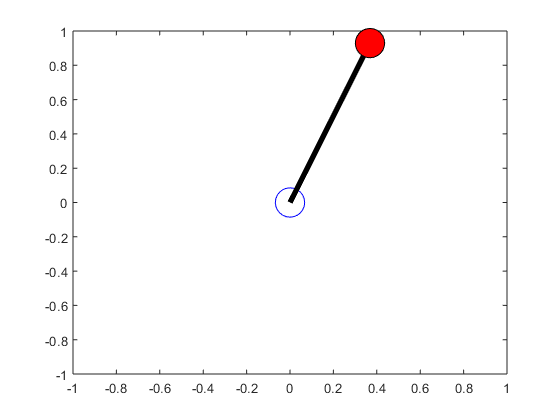

function xVec = pendulum_sim
system = ocl.System(@ocl.examples.pendulum.varsfun, ...
@ocl.examples.pendulum.daefun, ...
@ocl.examples.pendulum.icfun, ...
'callbacksetup', @ocl.examples.pendulum.simcallbacksetup, ...
'callback', @ocl.examples.pendulum.simcallback);
simulator = Simulator(system);
states = simulator.getStates();
states.p.set([0,1]);
states.v.set([-0.5,-1]);
p = simulator.getParameters();
p.m.set(1);
p.l.set(1);
times = 0:0.1:4;
controlsSeries = simulator.getControlsVec(length(times)-1);
controlsSeries.F.set(10);
[xVec,~,~] = simulator.simulate(states,times,controlsSeries,p);
snapnow;
end
This is Ipopt version 3.12.3, running with linear solver mumps.
NOTE: Other linear solvers might be more efficient (see Ipopt documentation).
Number of nonzeros in equality constraint Jacobian...: 11
Number of nonzeros in inequality constraint Jacobian.: 0
Number of nonzeros in Lagrangian Hessian.............: 9
Total number of variables............................: 6
variables with only lower bounds: 0
variables with lower and upper bounds: 0
variables with only upper bounds: 0
Total number of equality constraints.................: 3
Total number of inequality constraints...............: 0
inequality constraints with only lower bounds: 0
inequality constraints with lower and upper bounds: 0
inequality constraints with only upper bounds: 0
iter objective inf_pr inf_du lg(mu) ||d|| lg(rg) alpha_du alpha_pr ls
0 0.0000000e+000 8.98e+000 0.00e+000 -1.0 0.00e+000 - 0.00e+000 0.00e+000 0
1 8.0000000e-001 2.91e+000 1.28e+000 -1.0 1.46e+001 - 1.00e+000 1.00e+000h 1
2 8.5604361e-001 2.00e+000 2.75e-001 -1.0 3.04e-001 0.0 1.00e+000 1.00e+000h 1
3 6.4214847e-001 4.64e-001 2.56e-002 -1.0 1.10e+000 - 1.00e+000 1.00e+000h 1
4 6.4339461e-001 9.00e-003 1.14e-003 -1.7 2.85e-001 - 1.00e+000 1.00e+000h 1
5 6.4341122e-001 1.52e-006 8.44e-007 -3.8 7.98e-003 - 1.00e+000 1.00e+000h 1
6 6.4341119e-001 1.37e-013 5.88e-014 -8.6 1.28e-006 - 1.00e+000 1.00e+000h 1
Number of Iterations....: 6
(scaled) (unscaled)
Objective...............: 6.4341119311963590e-001 6.4341119311963590e-001
Dual infeasibility......: 5.8841820305133297e-014 5.8841820305133297e-014
Constraint violation....: 1.3739009929736312e-013 1.3739009929736312e-013
Complementarity.........: 0.0000000000000000e+000 0.0000000000000000e+000
Overall NLP error.......: 1.3739009929736312e-013 1.3739009929736312e-013
Number of objective function evaluations = 7
Number of objective gradient evaluations = 7
Number of equality constraint evaluations = 7
Number of inequality constraint evaluations = 0
Number of equality constraint Jacobian evaluations = 7
Number of inequality constraint Jacobian evaluations = 0
Number of Lagrangian Hessian evaluations = 6
Total CPU secs in IPOPT (w/o function evaluations) = 0.269
Total CPU secs in NLP function evaluations = 0.000
EXIT: Optimal Solution Found.
t_proc [s] t_wall [s] n_eval
nlp_f 0 0 7
nlp_g 0 0 7
nlp_grad_f 0 0 8
nlp_hess_l 0 0 6
nlp_jac_g 0 0 8
solver 0.269 0.269 1
  
ans =
Variable:
Size: [5 1 41]
Type: OclStructure
Children: p, v, time
Value: [-0.545397 -0.613278 -0.662768 -0.702453 -0.738525 -0.775814 -0.818209 -0.868217 -0.92492 -0.978533 -0.998706 -0.916326 -0.620216 -0.0436882 0.629647 0.988773 0.871723 0.502943 0.128628 -0.156906 -0.3...